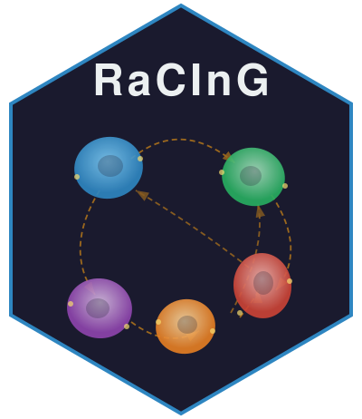
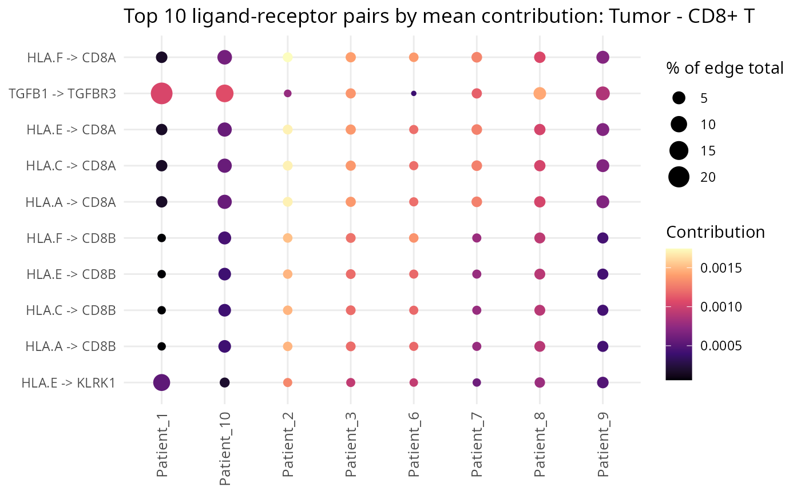

Dot plot of top ligand-receptor pair contributions (LIANA-style)
Source:R/LR_Contributions.R
plotLRContributions.RdRanks ligand-receptor pairs by mean contribution (within each Edge
separately) and plots the top ones as a dot per patient x pair:
dot size is PctOfTotal, dot color is the raw Contribution.
Arguments
- lr_contrib
Output of
computeLRContributions().- top_n
Number of top ligand-receptor pairs to show per
Edge.- title
Plot title. Defaults to
NULL, which auto-generates one naming the cell type(s) involved (e.g."Top ligand-receptor pairs: CLL - NKcells"), derived fromlr_contrib'sSender/Receivercolumns.
Examples
data(skcm_example)
lr <- computeLRContributions(
Lmatrix = skcm_example$Lmatrix, Rmatrix = skcm_example$Rmatrix,
Cmatrix = skcm_example$Cmatrix, LRmatrix = skcm_example$LRmatrix,
celltypes = skcm_example$celltypes, sender = "Tumor", receiver = "CD8+ T"
)
if (requireNamespace("ggplot2", quietly = TRUE)) {
plotLRContributions(lr, top_n = 10)
}
